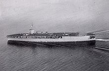
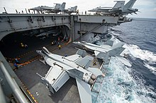

Portaaviones
¿Qué es?
Es un buque de guerra capital capaz de transportar y operar aviones, helicópteros y drones. Sirve como una base móvil para aeronaves que pueden entrar en combate o hacer reconocimiento.4 Tiene su propio grupo de batalla conformado por varios destructores, fragatas, cruceros, submarinos, helicópteros anti-submarinos y aviones de alerta temprana que lo protegen y salvaguardan.
Historia
El invento de los hermanos Wright en 1903 está muy cercano del primer despegue experimental en 1910 por un aeroplano de la cubierta de un crucero de la Armada de Estados Unidos, el USS Birmingham (CL-2) y los primeros aterrizajes fueron realizados en 1911.
El 4 de mayo de 1912, el primer avión en despegar de un barco en movimiento tuvo lugar cuando el comandante Charles Samson voló desde el HMS Hibernia (19056).
Los portahidroaviones se convirtieron en el siguiente paso en la historia de los portaviones. La Armada Imperial Japonesa consiguió realizar la primera incursión hidro-naval de la historia en septiembre de 1914 desde el Wakamiya.1112 Usado contra las fuerzas alemanas durante la Primera Guerra Mundial, cargaba cuatro hidroaviones Maurice Faman franceses que despegaron y aterrizaron en el agua donde fueron recogidos mediante una grúa.
El desarrollo de cruceros con cubierta plana y corrida a lo largo de toda la eslora produjo los primeros grandes barcos de la flota. En 1918 el HMS Argus se convirtió en el primer portaviones capaz de lanzar y aterrizar aviones navales.14 Debido al éxito de estos buques en los años 1920 empiezan a construirse los primeros buques diseñados específicamente como portaviones, el HMS Hermes y el japonés Hōshō.
La mayor parte de los primeros portaviones eran conversiones de naves que habían servido para otra cosa o diseñado en un principio para otro propósito, como mercantes, cruceros, cruceros de batalla o acorazados.
El Tratado Naval de Washington de 1922 afectó a los planes de portaviones. Estados Unidos y Reino Unido tuvieron que limitar a 35 000 t el desplazamiento de sus portaviones, mientras que algunas exenciones específicas permitieron que algunos barcos individuales de tonelaje superior fueran convertidos a portaviones como la clase Lexington.
Durante la década de 1920, varias armadas empezaron a diseñar y construir portaviones específicamente diseñados para ello. Esto permitió que el diseño se especializara para su futuro papel como barcos principales y de mando.
Durante la Segunda Guerra Mundial, estos barcos se convirtieron en el núcleo de la fuerza naval de los Estados Unidos, Gran Bretaña y el Imperio Japonés.
El portaviones se usó extensivamente en la Segunda Guerra Mundial, y durante ese tiempo se construyeron de varios tipos.
- Los portaaviones escolta, tales como el USS Bogue, solo se construyeron durante la Segunda Guerra Mundial. Aunque muchos portaviones fueron barcos construidos con ese propósito, la mayoría fueron convertidos a partir de barcos mercantes con el fin de dar apoyo aéreo a los convoyes y las misiones anfibias
- Los portaaviones ligeros construidos por los estadounidenses, como el USS Independence, representaron una mayor, más capaz y más militarizada versión de un portaviones escolta. Aunque los portaviones ligeros llevaban la misma cantidad de aviones que los portaviones escolta tenían la ventaja de una velocidad mayor ya que provenían de diseño de cruceros. La mayor velocidad les permitió operar conjuntamente con portaaviones más grandes. El concepto de portaviones ligero establecido en 1942 sirvió a la Marina Real británica hasta bien entrados los años 1980.
Portaaviones
Tipos
|  |
- Despegue por catapulta y recuperación por retención, también CATOBAR (de las siglas en inglés Catapult-assisted take-off but arrested-recovery). Estos portaviones generalmente llevan los mayores, más pesados y los aviones mejor armados de la flota, aunque los CATOBAR más pequeños pueden tener otras limitaciones (capacidad de peso de los elevadores...). Tres naciones operan actualmente aviones de este tipo: diez por Estados Unidos, y uno por Francia y otro de Brasil, lo que suman doce en servicio.
- Despegue corto pero recobro mediante detención, también STOBAR (de las siglas en inglés Short take-off but arrested-recovery). Estos portaaviones están generalmente limitados a llevar aviones más ligeros con ala fija y más limitaciones de carga. Los aviones capaces de volar en este tipo son el Sukhoi Su-33 y el futuro Mikoyan MiG-29K.Existen tres portaviones operativos, el ruso Almirante Kuznetsov, el chino Liaoning y el indio Vikramaditya, este último es una modificación de la Clase Kiev. Su objetivo es asegurar el control aéreo de la zona, asegurando tareas de defensa y superioridad aérea más que para realizar una incursión, lo cual requeriría de aviones más pesados con bombas y misiles aire-tierra.
- Despegue corto y aterrizaje vertical, también STOVL, (de las siglas en inglés Short Take-Off and Vertical Landing). Solo pueden llevar aeronaves que sean capaces de realizar una aterrizaje vertical como el Hawker Siddeley Harrier y el Yakovlev Yak-38. Son aviones con unas cargas muy limitadas, unas características más bajas y alto consumo de combustible si se compara con los aviones convencionales de ala fija. India tiene uno en servicio e Italia tiene dos, lo que suma 3 en servicio. Reino Unido y Tailandia tiene uno cada uno pero no tienen capacidad STOVL en la actualidad.
|
Características Juan Carlos I
| INSTALACIONES |
- Garaje de vehículos pesados con 1410 metros cuadrados.
- Garaje de vehículos ligeros de 1880 metros cuadrados.
- Hangar: 990 m²
- Municiones: 600 m².
|
| DOTACIÓN |
- Dotación propia: 247
- Estado Mayor: 103
- Personal Fuerza de Desembarco: 890
- Grupo Naval de Playa: 23
- Dotación Unidades Aéreas Embarcadas: 172.
|